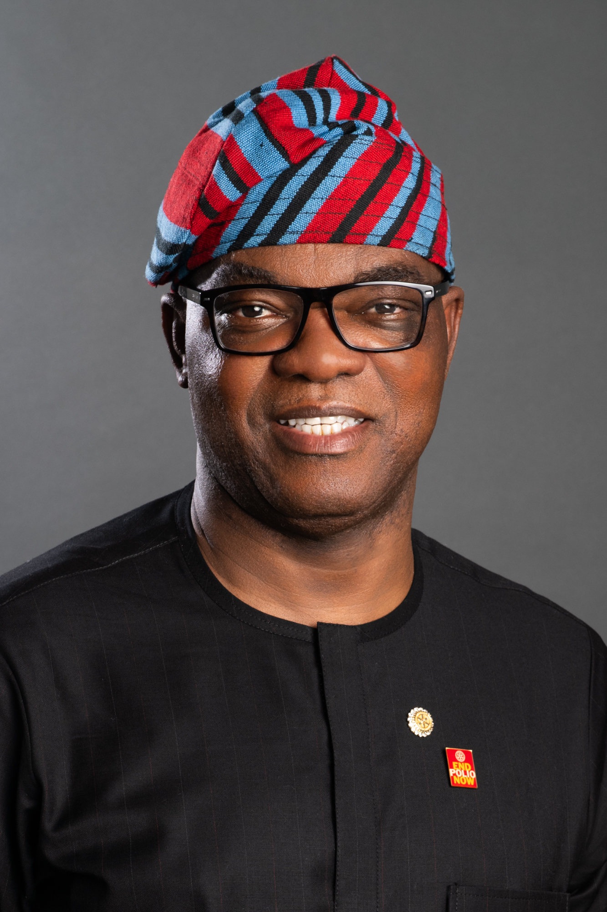

Rotary Club de Bauru
Ano rotário 2026-27 - Plano de Atividades
MENSAGEM PRESIDENCIAL DE 2026-27
Bom dia! Meus queridos amigos e família do Rotary, é uma honra recebê-los na Assembleia
Internacional de 2026 e parabenizá-los por terem se tornado governadores eleitos.
Reunimos líderes seniores, funcionários e associados excepcionais de todo o mundo para ajudá-los a se preparar para o próximo ano. E já que estamos todos aqui juntos, espero que aproveitem a oportunidade para conhecer seus colegas de turma. Não desfrutamos de todos os benefícios da associação ao Rotary se não vivenciarmos a sua internacionalidade. Nesta semana, o mundo rotário está ao seu redor.
Não percam essa oportunidade! Conheçam as pessoas. Façam amizades. Nunca se sabe aonde algumas palavras de gentileza podem levar vocês.
A maioria dos associados do Rotary que conheço — independentemente de onde sejam — são pessoas gentis e felizes, que rapidamente se tornam amigos leais.
Outra qualidade que compartilhamos é que o Rotary nos transformou. Ele moldou quem somos e nos tornou pessoas melhores. É aí que a mudança realmente começa, não apenas para as pessoas a quem servimos, mas também para nós mesmos.
Pensem em nossa Declaração de Visão: “Juntos, vemos um mundo onde as pessoas se unem e entram em ação para causar mudanças duradouras em si mesmas, nas suas comunidades e no mundo todo.”
Muitas vezes, falamos sobre mudar o mundo. Falamos sobre acabar com a pólio, sobre construir a paz. Falamos sobre mudar nossas comunidades. Há muitos exemplos incríveis.
Mas eu pergunto: como estamos fazendo mudanças duradouras em nós mesmos? Normalmente, quando faço essa pergunta a associados do Rotary, a sala fica em silêncio.
Esse silêncio me diz algo: que não pensamos o suficiente sobre como o Rotary nos transforma.
Como o Rotary:
- Transforma nossas carreiras
- Transforma nossos negócios
- Transforma nossas famílias
Ele pode até ser uma luz nos momentos mais sombrios, como foi para Tia Coppus, associada do Rotary Club de Cary-Kildaire, na Carolina do Norte, EUA.
Em 2021, Tia perdeu o marido devido a um câncer após 19 meses de luta pela sua vida. Ela praticamente não teve contato com ninguém durante esses 19 meses, por cuidar do marido e se isolar devido à pandemia de covid-19.
Foi então que uma querida amiga do Rotary Club de Tia ligou para ela e disse: “Você precisa vir ao jantar na próxima quinta-feira. Queremos ver você”.
Ao entrar no jantar do Rotary, Tia estava se sentindo nervosa e vulnerável. Mas antes mesmo que pudesse se sentar, uma nova associada que ela nunca tinha visto a abraçou e disse: “Seja bem-vinda! Estamos muito felizes por você estar aqui”.
Foi naquele momento que Tia percebeu que não estava sozinha, que tinha uma comunidade.
O Rotary era sua comunidade.
Depois daquele jantar, Tia escreveu como isso a impactou. Ela disse: "O Rotary tem uma maneira de aparecer discretamente, com amor, quando você mais precisa.
Ele nos lembra que, mesmo quando estamos acostumados a dar, não há problema em receber."
E acrescentou: “Então, se você está buscando conexão, serviços humanitários e um lugar ao qual pertencer … o Rotary pode ser a resposta.”
E acho que alguns nesta sala podem se identificar com isso.
Meus amigos, à medida que o Rotary trabalha para mudar o mundo, não tenham medo de contar como o Rotary mudou vocês.
Posso dizer com base na minha própria vida que o Rotary me transformou profundamente.
Comecei como rotaractiano quando ainda era adolescente. Tive uma criação privilegiada e uma boa educação, em um lugar onde muitos não tiveram essa oportunidade.
Um dos projetos de alfabetização do meu clube abriu meus olhos. Estávamos ajudando as pessoas da minha comunidade a aprender a ler e escrever. Pensei comigo mesmo que ninguém da minha idade no meu país deveria crescer sem essas habilidades.
Esse projeto me transformou e, com essa mudança, veio a responsabilidade de ampliar o acesso à educação.
Essa causa é especialmente importante hoje em dia. O Unicef estima que cerca de seis milhões de crianças no mundo poderão ser forçadas a deixar a escola até o final deste ano devido a cortes no financiamento da educação.
Para enfrentar essa crise educacional, precisamos mudar nossa mentalidade de doação para a de serviço.
Temos um ótimo exemplo a ser seguido em Knysna, na África do Sul, onde Rotary Clubs estão criando impacto duradouro na educação.
O Rotary Club de Knysna se uniu a parceiros locais em 2019 a fim de descobrir o que seria necessário para garantir que todas as crianças da comunidade tivessem acesso a uma educação infantil de qualidade até 2025.
O clube envolveu pessoas da comunidade, esforçou-se para entender o problema e começou a trabalhar.
O projeto resultante destravou o poder das mulheres de comunidades carentes para abrirem e gerenciarem centros de educação infantil. Hoje, o projeto alcança milhares de crianças e famílias, e continuará oferecendo educação nessas comunidades por muitas gerações.
Podemos recriar esse tipo de impacto em outras partes do mundo e, ao fazê -lo, ganhar confiança e reconhecimento nas comunidades a que servimos. E quando mais comunidades confiam no Rotary, mais pessoas têm interesse em se associar.
Mas, primeiro, temos que deixá-las entrar.
Isso pode parecer óbvio, mas é um desafio que já existe há algum tempo.
Quando eu tentei me associar ao Rotary como jovem rotaractiano, enfrentei resistência.
Um dia, simplesmente apareci em uma reunião do clube durante o almoço. Na verdade, eu já havia estado lá antes, mas sempre a convite deles.
O presidente olhou para mim, um jovem rotaractiano, e perguntou: "O que você está fazendo aqui?"
Eu falei que estava ali para me associar ao Rotary. Todos na sala viraram a cabeça e olharam para mim.
Ele disse: "Que audácia! Você não pode simplesmente se associar. Você precisa de um convite."
Eu poderia simplesmente ter ido embora. Em vez disso, falei: "Eu não sabia que um filho precisava de convite para entrar na casa de seus pais".
À medida que o silêncio invadia a sala, um rotariano, chamado Soji Fowode, exclamou: “Yinka, eu irei apadrinhá-lo.”
E foi assim que eu me tornei rotariano.
Mas e se o Soji tivesse ficado em silêncio? Talvez eu jamais teria me associado e não estaria aqui diante de vocês hoje.
O Rotary mudou desde então. Mas alguns clubes ainda se escondem atrás de portas fechadas, em vez de acolher o mundo de braços abertos.
As opiniões dos jovens nem sempre são respeitadas. Pessoas de diferentes origens ou com ideias diferentes nem sempre se sentem bem-vindas. E quando isso acontece, perdemos associados em potencial antes mesmo de se envolverem.
E nós precisamos de mais associados. O Conselho Diretor estabeleceu a meta de aumentar o quadro associativo para 1,25 milhão de rotarianos e 125.000 rotaractianos até o nosso aniversário de 125 anos em 2030. O alcance dessa meta começa com todos nós.
Portanto, ao iniciarmos esta Assembleia Internacional, eu os incentivo a pensar em como acolhemos outras pessoas. Nunca se sabe que história rotária pode começar — ou terminar — com base na maneira pela qual elas se sentem em uma reunião ou projeto.
É assim que atingiremos nossas metas.
Quando cada um de vocês lidera seu distrito para atingir suas metas, todos nós, juntos, atingimos as nossas. Mas seja qual for a meta, especialmente com relação ao quadro associativo, eu os incentivo a irem além do seu melhor.
Tradicionalmente, celebramos os clubes que arrecadam mais fundos, atraem mais associados ou realizam os maiores projetos.
Isso é importante. A competição mais saudável não deve ser entre os clubes, mas entre nosso passado e presente.
Quero desafiar cada distrito e clube a fazer uma retrospectiva dos últimos cinco a sete anos.
Qual foi seu melhor ano em termos de aumento do quadro associativo?
Qual foi seu melhor ano em termos de captação de recursos? Qual foi o seu projeto de maior impacto?
Depois de determinarem o seu melhor ano, eu os desafio a fazerem melhor do que o seu melhor.
Vocês passarão um ano da sua vida como governadores de distrito. O que vocês querem que as pessoas digam quando olharem para trás, para o seu ano na liderança?
Vocês ficarão surpresos com o quanto elas se lembrarão.
Se um clube admitiu 10 associados no seu melhor ano, ele deve ter como meta pelo menos 11.
Se os associados arrecadaram US$ 50.000 alguns anos atrás, vejam se eles conseguem chegar a US$ 55.000 neste ano.
Não para provar que são melhores do que os outros, mas para se tornarem a melhor versão de si mesmos.
Há um ditado assim:
Bom, melhor, excelente. Nunca descanse.
Até que o bom fique melhor e o melhor fique excelente.
O mesmo pensamento se aplica a nós e aos nossos clubes e distritos. Precisamos criar uma mentalidade de mudança e impacto.
É importante lembrar que mudança e impacto não são a mesma coisa. A mudança é apenas o começo. O impacto é aquilo que perdura.
Gostaria de compartilhar um exemplo da Nigéria, onde o programa Juntos por Famílias Saudáveis, financiado por um Subsídio de Grande Escala, vem sendo implementado há anos.
No início do programa, eu visitei um centro de saúde em uma das cidades-piloto. Queria ver com meus próprios olhos o que estava acontecendo.
O médico-chefe não sabia quem eu era — apenas que era associado do Rotary.
Ele me recebeu calorosamente.
Disse que haviam começado a trabalhar com o Rotary há cerca de 18 meses e que, logo em seguida, as mortes maternas e infantis diminuíram drasticamente.
Antes da intervenção do Rotary, muitas mulheres evitavam as consultas de pré-natal, que são essenciais para garantir um parto seguro para a mãe e o bebê.
Depois de trabalhar com o Rotary, foram implementados sistemas para ajudar as gestantes a fazerem o pré-natal.
A comunidade se envolveu. O comparecimento aumentou. A mortalidade diminuiu.
Depois de conversar com aquele médico, eu pude entender claramente como o projeto transformaria vidas em toda a Nigéria por décadas.
É isso que quero dizer quando falo em "impacto duradouro".
Como associados do Rotary, compartilhamos a visão de um futuro melhor: um mundo livre da pólio, um mundo em paz, um mundo onde todos tenham acesso a uma educação de qualidade.
Para tornar nossa visão uma realidade, precisamos reconhecer e desencadear a mudança dentro de nós mesmos.
Devemos nos concentrar não apenas nos resultados, mas no impacto.
Um resultado do convite do Rotary Club de Tia para o jantar foi o fato dela não se sentir mais sozinha. Mas o impacto é a esperança e o senso de comunidade que ela e seus companheiros de clube levarão consigo para o resto de suas vidas.
Na Nigéria, um resultado do programa Juntos por Famílias Saudáveis é a redução das taxas de mortalidade infantil e materna. Mas o impacto são as crianças que crescerão com o amor e a orientação de suas mães não apenas hoje, mas por gerações.
Nós alcançaremos nossas metas para 2030 referentes ao quadro associativo. E quando o fizermos, o resultado será um número maior de associados do Rotary em todo o mundo. E sabemos que, aonde quer que o Rotary vá, coisas boas acontecem.
E o impacto será um Rotary mais forte e eficaz, e um mundo melhor por anos e anos.
Meus amigos, esse futuro começa conosco. Mas deve perdurar por muito tempo depois que nosso trabalho no Rotary terminar.
É por isso que a mensagem presidencial para 2026-27 será Crie Impacto Duradouro.
Há muitas maneiras de Criar Impacto Duradouro.
No mundo, significa que devemos cumprir nossa promessa de erradicar a pólio e aproveitar todos os benefícios dos nossos Centros Rotary pela Paz.
Nos seus clubes e distritos, significa acolher mais pessoas e fazer a nossa parte para o alcance da meta de 2030 referente ao quadro associativo.
E vocês podem inspirar os integrantes do mundo rotário a Criarem Impacto Duradouro dentro de si sendo curiosos, fazendo perguntas e abraçando as infinitas oportunidades disponíveis à nossa família Rotary.
Perguntem-se como poderão inspirar seus clubes ou associados a produzir resultados e criar impacto duradouro em si mesmos.
O progresso não é automático.
Ele começa com a mudança dentro de nós.
Meus queridos governadores eleitos, o sucesso não os encontrará. Vocês é que precisam ir buscá-lo.
Quando mudamos a nós mesmos, mudamos nossos clubes e distritos.
Quando mudamos nossos distritos, mudamos as comunidades a que servimos.
E quando mudamos nossas comunidades, criamos impacto duradouro em nós mesmos, nas nossas comunidades e no mundo todo.
Obrigado, meus queridos amigos, e bem-vindos à Assembleia Internacional.

Olayinka Hakeem Babalola
Presidente do Rotary International
Ano rotário 2026-27